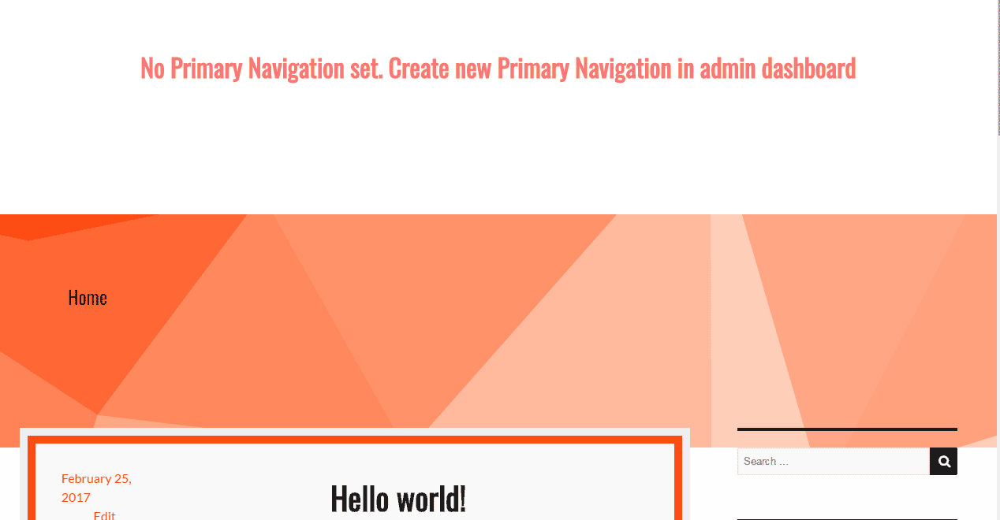
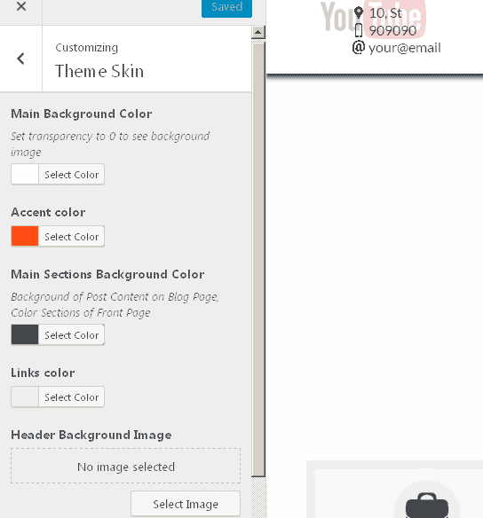
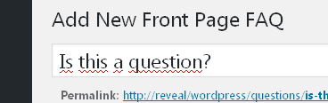
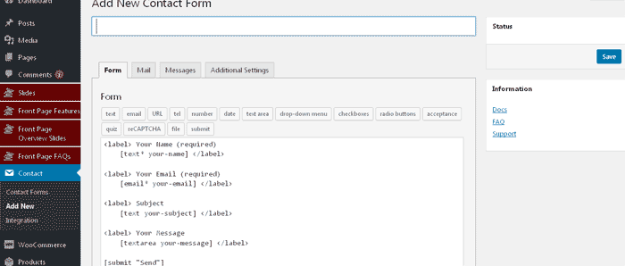

Slides - is the Main FeatureBack to Top
Reveal Presentation Theme is the best way:
- to represent your products
-


- to create business presentation slides
-

- to create educational slides

- or even create unusual web-page
Set-up & general guide to help you get the most out of your new WordPress theme. If you are still having trouble after reading this guide, contact our help team.
Reveal Presentation Theme is the best way:
After installing RevealPresentation Theme (Theme Installation) follow these steps to add new and setup slides.
So you can manage speaker notes on your laptop and display slides on bigger screen or projector

The next step is to setup Slides
After installing Theme (Theme Installation) go to Dashboard → Slides → New Slide and create you first slide.
If your knowledge of HTML and CSS are poor it is better to create slide like an image and then add it to content of a slide. Press Add Media above content area, select and upload your image for a slide.
Use this slide in slideshow - if you check this option current slide is displayed on page. Default is checked.
Duration time of current slide (works if enabled in Appearance → Theme Options → Advaced Settings → Enable Autoslide)
Here goes notes for speaker (any length text with HTML allowed). Speaker notes display in separate window and you can read it during your presentation.
NOTE! To display speaker notes of front-end just press "S" on your keyboard.
You can set Slide background color.
You can set Full background image.
The last option is Full background video. You can upload your video to your web-site, or insert external video (Youtube, Vimeo, etc.).
To insert external video you should copy-paste html code provided by video hosting services like Youtube, Vimeo, etc.
For Youtube, read instructions HERE
For Vimeo instructions HERE
If you want fullscreen video - it is recommended way to add video to a slide.
It is very convenient to group Slides in categories. You can add as many categories for Slides as you need.

From the right see Categories → All Categories find your desired category, check it and press "Update" or "Publish".

Go to Dashboard → Appearance → Menus, click Categories → View All on the left, check any category you need and click Add to Menu.

This item must not have link to any page, so create Custom Link: Dashboard → Appearance → Menus → Custom Links (from the left).
Insert "#" into URL field, and "Slides" into Link Text field. Press Add to Menu.
Just drag and drop subitems like "Mathematics" and "Real Estate" under Slides menu item. Save Menu.

Speaker Notes is very convenient way to manage Slides and all your presentation.
How to add link to your slides page:
- After you install Reveal Presentation Theme Go to Dashboard → Appearance → Menus select your Primary Menu (or create new with Display location checked as Primary Menu).
- On the left column you can see elements which you can add to menu, select Slides → View All → check Slides and click Add to Menu.

- Now go to your front page and you should see new menu item appeared.

don't forget to extend your screen on both monitors
This document covers the installation, set up, and use of this theme, and provides answers and solutions to common problems. We encourage you to first read this document thoroughly if you are experiencing any difficulties before contacting our support team.
Reveal Presentation Theme has many more customization options including stylistic color pickers, custom front page content and other add-ons. And in addition to these fantastic features, you'll also receive dashboard one-click updates and access to world-class theme support by our team of in-house professional WordPress developers.
Please note that support is only offered for Reveal Presentation Theme. If you already have a Pro license and have any questions that are beyond the scope of this document, feel free to ask us via our dedicated help center.
If you have a problem with the theme or found a bug, please let us know via our official Help Center. We take pride in our customer support and we will do what we can to assist you. If you are experiencing a theme issue, please first turn off all third party plugins to see if the problem persists.
Please note that support is only offered for Reveal Presentation Theme. If you have any questions that are beyond the scope of this document, feel free to ask us via our dedicated help center.
To upload through your Dashboard, select “Appearance” and then “Themes”. Next, select the “Add New” tab at the top of the page and then select the “Upload” link, right above the search field. Choose your file and select “Install Now”. Once the theme is fully uploaded and installed, click “Activate” to activate the WordPress theme.
The theme files will be stored on your server in the wp-content/themes location.
When uploading your theme with the installer, please ensure you are uploading the theme .zip file, not the entire package you downloaded. In this case, you will be uploading revealpresentation.zip.
To manually upload your new WordPress theme, login with your credentials to your website and locate the wp-content folder in your WordPress install files. Upload the zipped Revealpresentation folder into the: wp-content/themes folder. And inside this folder extract .zip file. Below example of some Hosting provider File Manager:

Once uploaded, activate the theme by heading to the “Themes” menu in the WordPress Dashboard. Locate the Reveal Presentation theme and hit “Activate”.
After successful installation in your Dashboard → Appearance → Themes you should see a new RevealPresentation theme appeared
After activation you'll see a notice to install required plugins

Press "Begin installing plugins" and install all required plugins
Now reload page! (Press F5)
You'll notice that new menu items appeared "Slides", "Front Page Features", "Front Page Overview Slides", "Front Page FAQs" and in Appearance "Theme Options"
Later you'll know what it is

But nothing special you can see, for a while :). Page looks like this:

Let's make some setup.
First go to Pages → Add New. Call it "Front" and just "Publish".

Next Pages → Add New. Call next page "Blog" or something else - this would be your blog page. Press "Publish".
Go to Settings → Reading Settings → Front page displays → A static page (select below) → "Front" and Posts page as "Blog". Save Changes.


Next step is to create Main Navigation (if not created yet)
Go to Appearance → Menus and create new navigation and check "Display location" like "Primary Menu" and Save Menu


Update your permalinks. Go to Settings → Permalinks and click "Save Changes"

Congratulation! Your initial installation complete.
Next you should configurate front page. Instructions are HERE
Now you can visit your site.

Time to customize your theme!
Add your contacts information. Go to Appearance → Customizing → Contact Details and insert Address, Telephone number and Email.

Add your preffered color scheme in Appearance → Customizing → Theme Skin
You can change Background Color for all page ("Main Background Color"), Accent Color, Color for some sections, Navigation Background Color and Image.
Try to change that options!
NOTE! If you want to set background image for Navigation, set Header Background Color transparency to 0.When you remove Header Background Image, don't forget to set some transparence more than 0.5.

Go to Dashboard → Appearance → Customize → Site Identity.
Reveal Presentation Theme comes with some additional options, which can be found on Dashboard → Appearance → Theme Options.
In Appearance → Theme Options → Navigation Settings you can set Your logo image, Text for logo and switch main navigation for different modes
If "Always display top navigation" is ON Main Navigation is always displayed on Front Page
If "Always display top navigation" is OFF
Main Navigation is displayed by clicking on button
"Enable Presentation Slides on Front Page" if enabled, Presentation Slides show on Front Page.
When you enable Presentation Slides on Front Page select list appears with categories to choose. Choose only one category of slides to display on front page.

"Enable Autoslide" If enabled, slides change automatically every 15 seconds, but you can change time editing every slide. Go to Slides →Edit Slide.
"Autoslide Time" - Set time of changing slides (You can redeclare it on every post Go to Slides →Edit).
"Enable Loop Presentation" - If enabled, after last slide goes first (click left arrow or right arrow or swipe left - right on mobile devices).

Just set text for page preloader.
Set Blog page background image
Next Tab is "Social Media Settings". Set links for your social media.
"App Store badge url" You can generate it HERE, or additional information HERE
EXAMPLE for Angry Birds Game is "https://itunes.apple.com/us/app/angry-birds-2/id880047117?mt=8"
"Google Play badge" - Full information HERE
EXAMPLE for Tiny Flashlight App is "https://play.google.com/store/apps/details?id=com.devuni.flashlight&pcampaignid=MKT-Other-global-all-co-prtnr-py-PartBadge-Mar2515-1"
"Preloader Settings" - just text for preloader
You can leave default Titles - just press "Update".
Or change titles as you wish.
Fill Download Section Text, Download Section Background Image.
Set Map Section Background Image, create Google Map shortcode with WP Google Maps Plugin. Instructions HERE, and paste shortcode.
Then you should fill your contact info. Instructions HERE. And set color scheme for a web-page there too.
You can add as many features as you wish.
- First you should to install Woocommerce Plugin (if you follow this Guide, that step has been done).
- Then add several Products.

To display product on Front Page check "Use" checkbox "ONLY for Front Page" in "Use this product in Pricing Table for Front Page"
"Make this product popular" - adds label "Popular" on top left corner of a product (recommended only for one product)
Next section is contact information. If you didn't fill contact information at the beginnig of this guide, go to Appearance → Customize → Contact Details and fill your contacts.
Title is the question.

And content is the answer.
Note! HTML is not allowed for answers.
- Create new Contact Form. Go to Contact → Add New.

After you save your newly created form, a shortcode will be generated.
Copy this shortcode and paste it on Front Page template. Go to Pages → Front Page → Edit Page. Find Contact Form section and paste Contact Form shortcode there.
Press "Update".
Create new Map (also you need Google Map API key generated read more about Google Map API key), then copy generated shortcode and paste it on Front Page (Pages → Front Page → Edit and scroll to bottom).